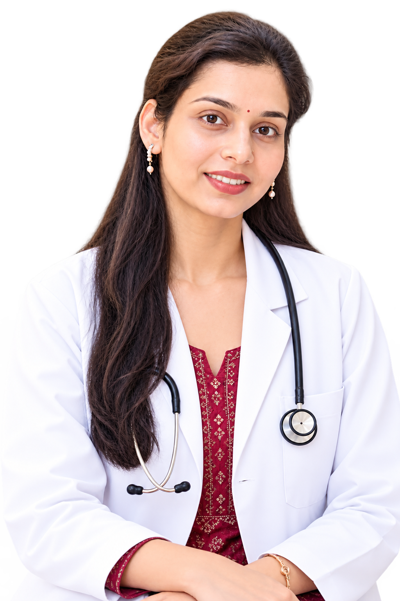

QualificationBAMS
BAMS · Ayurvedic Physician · Founder
Dr. Shrashti
Bhardwaj
Founder of Utkrishti Ayurveda, committed to bringing the principles of authentic Ayurveda into modern healthcare through personalised, holistic and practical patient care.
Utkrishti AyurvedaGreater Noida · Greater Noida Extension

Patient-first care
Personalised Ayurveda
Consulting atUtkrishti AyurvedaGreater Noida
Professional RoleAyurvedic Physician
PracticeFounder – Utkrishti Ayurveda
ConsultationsGreater Noida & Extension
About Dr. Shrashti
Authentic Ayurveda, personalised for modern life.
Dr. Shrashti Bhardwaj is a BAMS-qualified Ayurvedic Physician and the Founder of Utkrishti Ayurveda. She is committed to bringing the principles of authentic Ayurveda into modern healthcare through personalised and holistic patient care.
Her approach goes beyond symptomatic relief. She focuses on understanding each individual—their Prakriti, lifestyle, diet and underlying imbalances—and then develops a personalised Ayurvedic approach suited to their needs.
“Ayurveda is not merely about managing disease—it is about restoring balance, supporting the body’s natural healing processes and cultivating sustainable health and wellbeing.”
Her approach to care
Thoughtful Ayurveda for real life.
Care is shaped around the individual, with attention to Prakriti, lifestyle, diet, health concerns and underlying imbalances.
Listen deeply
Begin with the patient’s concerns, health history, lifestyle, diet and day-to-day context.
Understand individually
Understand Prakriti and the individual pattern of imbalance before planning care.
Keep guidance clear
Develop personalised Ayurvedic guidance that is clear, practical and suited to everyday life.
Review thoughtfully
Review progress thoughtfully and adapt the approach according to the individual’s evolving needs.
Professional profile
Ayurvedic care rooted in classical principles.
As a BAMS-qualified Ayurvedic Physician and Founder of Utkrishti Ayurveda, Dr. Shrashti works to make authentic, personalised and practical Ayurveda accessible to people living in today’s fast-paced world.
Book with Dr. ShrashtiQualification
BAMS
Trained in Ayurvedic medicine with a clinical approach rooted in the fundamental principles of Ayurveda.
Leadership
Founder – Utkrishti Ayurveda
Building a patient-centred practice focused on authentic, individualised and practical Ayurvedic care.
Clinical Focus
Digestive, women’s & musculoskeletal health
Focused care for common digestive concerns, women’s health and hormonal disorders, and joint, spine and mobility-related conditions.
Care Philosophy
Balance before symptoms alone
Understanding Prakriti, diet, lifestyle and underlying imbalances to support the body’s natural healing processes and sustainable wellbeing.
Clinical focus
Areas Dr. Shrashti commonly manages.
Her clinical work includes digestive health, women’s health and hormonal disorders, and musculoskeletal conditions, with care personalised to the individual rather than a one-size-fits-all protocol.
Explore clinic specialitiesAcidity, gas & bloatingConstipationPCOD / PCOSHormonal imbalanceInfertilityUterine fibroidsJoint pain & osteoarthritisRheumatoid arthritisCervical spondylosisSciatica
Consult Dr. Shrashti
Begin with a personalised Ayurvedic consultation.
Discuss your concerns, lifestyle, diet and health goals with Dr. Shrashti at Utkrishti Ayurveda.